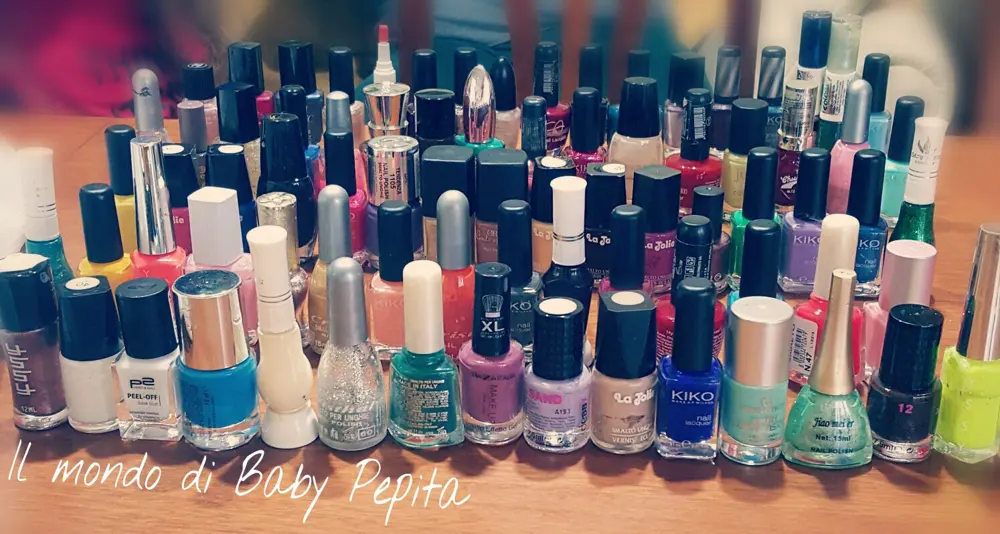
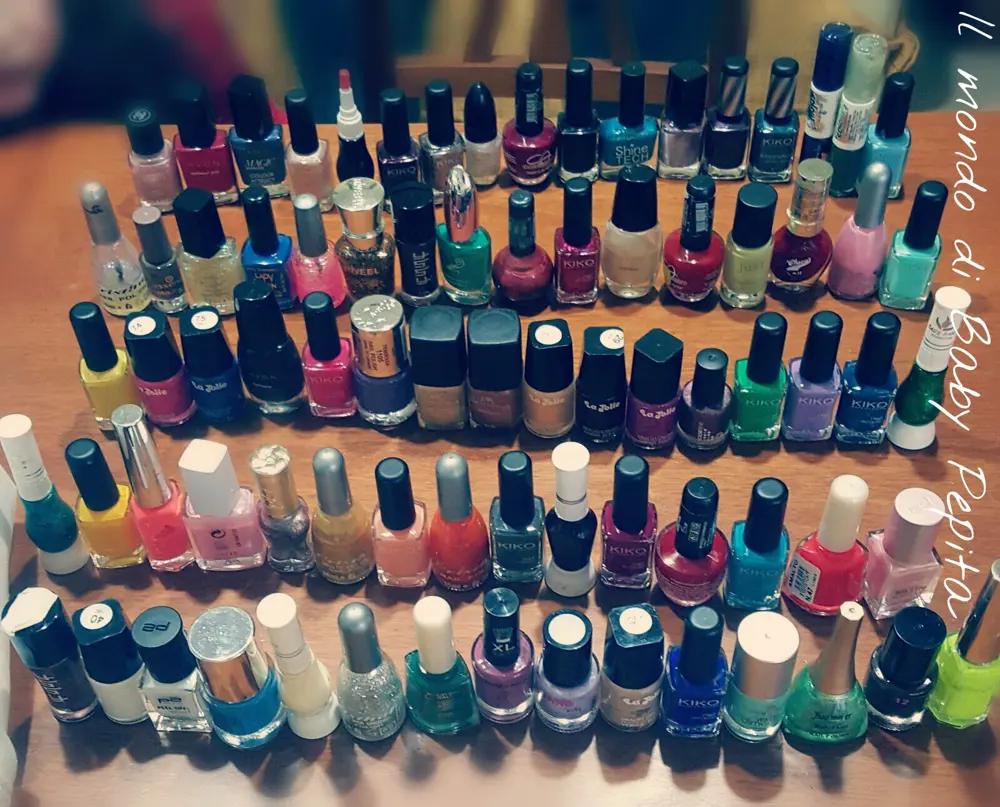

PassionE smalti
Buonaseraaaaa
Chi come me questo domenica sera è a casa?
Un tempo uggioso che mi ha fatto stare tutta la giornata nervosa e strana. .
Mi sa che sono un pò metereopatica boh.
Vabbe passiamo ad altro.
Oggi mi sono data alla nail art e ho avuto l'idea di mettere tutti i miei ormai adorati smalti in fila, uno dietro l'altro. .
Curiose di vedere la mia collezione?
Ho fatto anche un video perchè erano tanti ihihih
Ben 80. .

E qualcuno buttato perché seccato!
Ma nonostante tutto non smetto di comprare, farmi regalare e vedere nuovi smalti e colori. .
Non ne ho mai abbastanza ahahah
